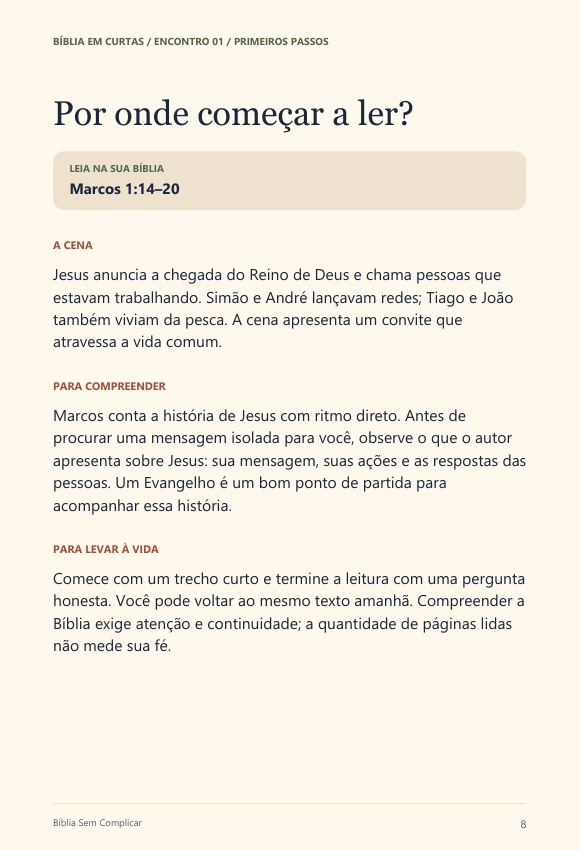
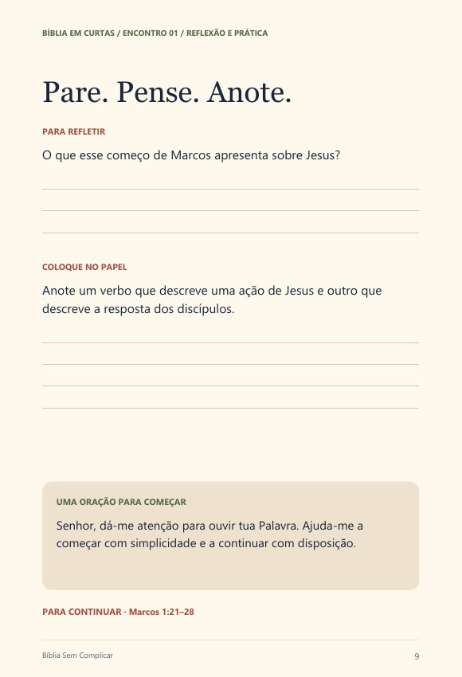
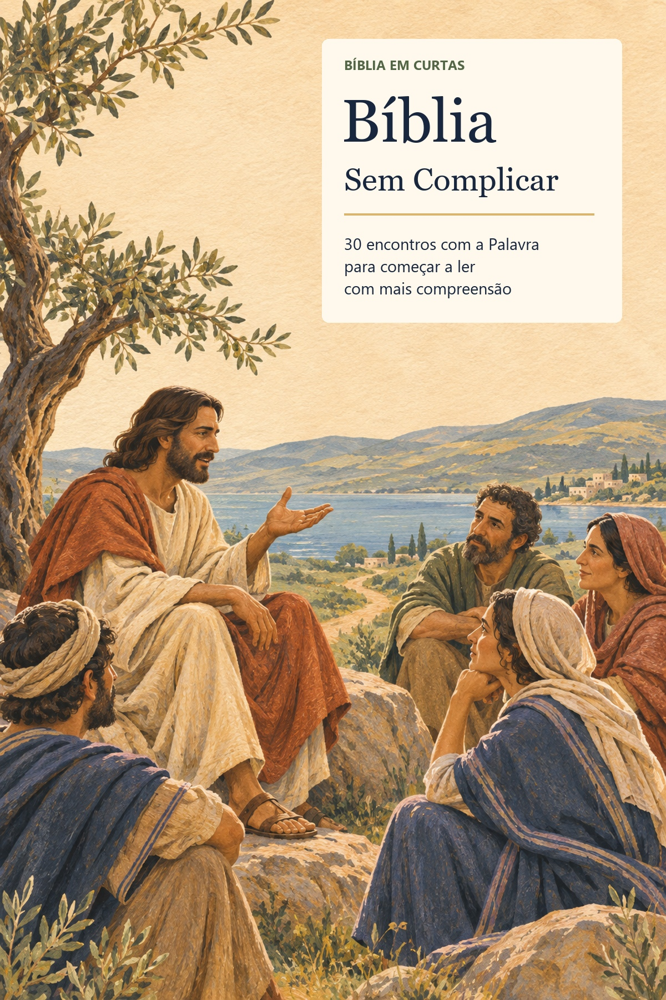

Para quem está começando
Aprenda a localizar uma referência, observar quem fala e entender o contexto de uma passagem.
Você quer ler, mas se perde nas passagens?
30 encontros com explicações simples, perguntas e orações para acompanhar sua leitura.
Pagamento único · PDF ilustrado · leia no seu ritmo



30encontrosComo é por dentro
Em cada encontro, duas páginas para compreender, refletir e registrar.
Uma referência para você abrir e conferir o texto na sua Bíblia.
Explicações curtas para acompanhar a história e perceber o que vem antes e depois.
Uma pergunta de reflexão e uma proposta para colocar no papel.
Uma oração simples e uma leitura complementar para continuar.
Para a vida real
Aprenda a localizar uma referência, observar quem fala e entender o contexto de uma passagem.
Encontre um roteiro possível, faça suas anotações e volte a ler com atenção, no seu ritmo.
Os 30 encontros
Dos primeiros passos na leitura ao ensino de Jesus e às escolhas do cotidiano.
Seu próximo passo
30 encontros com a Palavra
Pagamento único · link de acesso enviado por e-mail após a aprovação
Você recebe um arquivo digital. Pode ler no celular, tablet ou computador e imprimir suas páginas de anotações.
Escolha a forma de pagamento e confira os dados do seu e-mail.
Após a aprovação do pagamento, a Cakto envia o link da pasta do seu e-book.
Baixe o PDF, separe sua Bíblia e comece pelo primeiro encontro.
Dúvidas
Você recebe um e-book em PDF. Pode baixar e ler nos seus dispositivos ou imprimir para uso pessoal.
Sim. O guia indica as passagens para você ler na sua Bíblia impressa ou digital. As explicações e reflexões acompanham a leitura do texto completo.
É um guia introdutório para adultos cristãos, com passagens presentes nas Bíblias católicas e evangélicas. O livro reconhece diferenças de tradição e orienta a aprofundar dúvidas com pessoas preparadas da sua comunidade.
Você pode fazer um encontro por dia ou seguir outro ritmo. Os 30 encontros ficam disponíveis no arquivo para você retomar quando quiser.
Após a aprovação do pagamento, você recebe no e-mail informado na compra o link da pasta de entrega no Google Drive. Abra a pasta, selecione o PDF e baixe seu exemplar. Confira também a caixa de spam.
É um e-book de leitura guiada, com 30 encontros e páginas de reflexão. As referências levam ao texto completo na sua Bíblia. Não inclui aulas em vídeo.
Comece pela primeira página
Bíblia Sem Complicar · 30 encontros para adultos